Spring is the perfect season to pull out the paper, scissors, and glue and make something cheerful together. These spring paper crafts are simple enough for toddlers, engaging enough for older kids, and designed to create real sweet moments with your little ones. From blooming flowers to friendly bugs, there is something on this list for every age and every afternoon. 🌸
What You'll Need
Most of these spring paper craft ideas use the same handful of basic supplies, so one quick setup covers nearly the whole list.
- Crayola Construction Paper (240 sheets), a rainbow assortment with every spring color you could want.
- Elmer's Disappearing Purple Glue Sticks, easy to see where you applied them and dries clear.
- Fiskars Training Scissors for Kids, safe spring-action scissors great for ages 3 and up.
- Fiber Craft Tissue Paper Pack, adds beautiful soft color and texture to several ideas on this list.
- Pipe Cleaners Chenille Stems (1050 pieces), perfect for antennae, stems, and little creature legs.
- Upins Self-Adhesive Googly Eyes, the finishing touch that makes every creature come to life.
- Crayons or washable markers, for drawing faces and adding colorful details.
- Tape or a glue gun (adult use only), helpful for a few of the more structural ideas.
20 Spring Paper Craft Ideas
1. Paper Butterfly
Fold a sheet of colorful paper in half and draw half a butterfly wing shape along the fold. Cut it out and open it up to reveal two perfectly symmetrical wings. Let your child decorate with markers, dot stickers, or tissue paper scraps, then pinch the center and wrap a pipe cleaner around it to form the body and antennae. These look gorgeous hung in a window where the light shines through the colors.
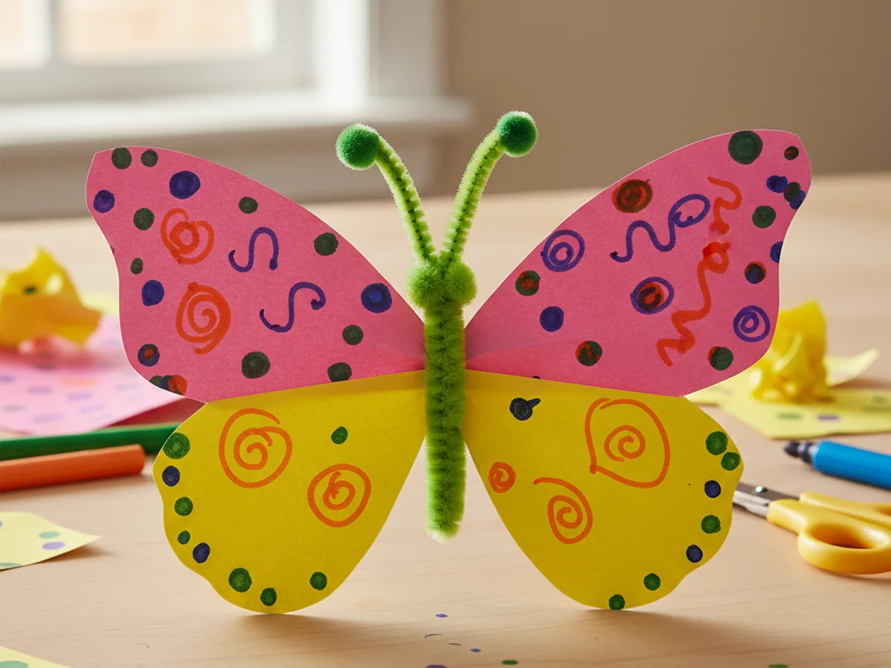
2. Paper Tulip
Cut a simple rounded petal shape from red, pink, or purple paper and fold three or four petals together at the base to form a tulip cup. Attach a long green paper strip as the stem and add two small leaf shapes on the sides. These make a beautiful handmade bouquet when you bunch several together and tie them with a ribbon.
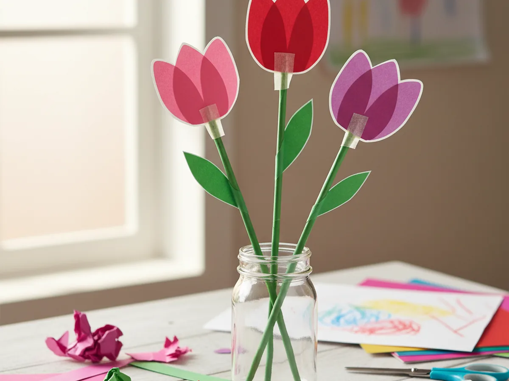
3. Paper Rainbow
Cut long strips of red, orange, yellow, green, blue, and purple construction paper and arch them one on top of the other to form a layered rainbow. Glue two small cotton ball clouds at each end. This is one of the easiest spring paper crafts for toddlers because it mainly involves tearing and sticking, and the finished result looks wonderful taped to a bedroom wall.
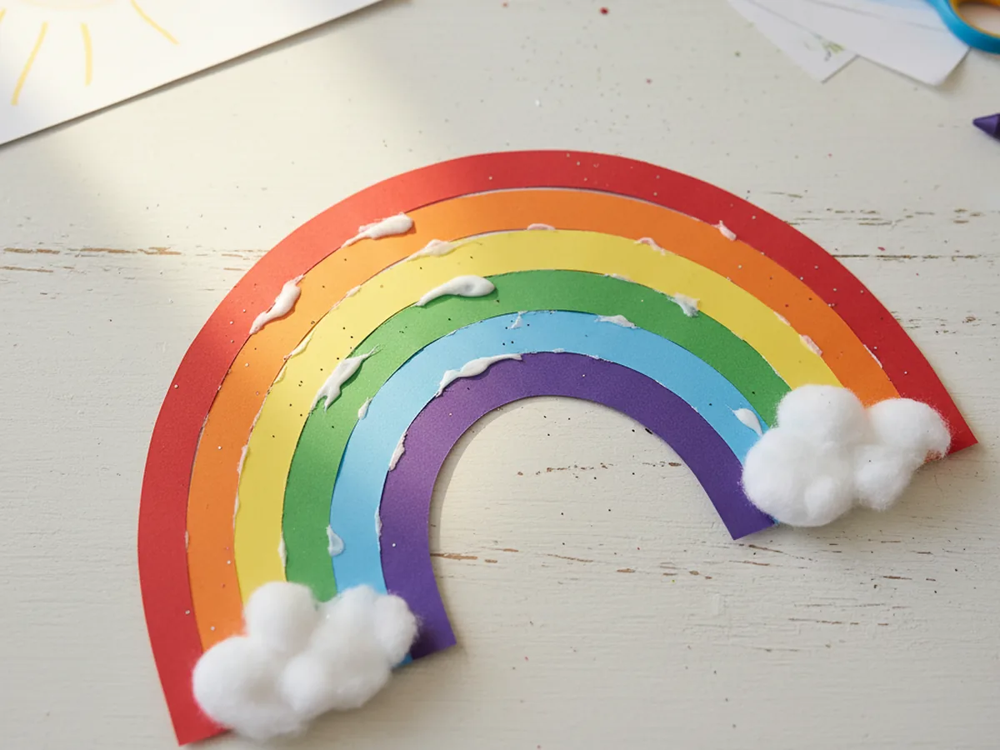
4. Paper Easter Chick
Stack a large yellow circle body on a slightly smaller yellow circle head and glue them together. Add an orange triangle beak, two small orange feet cut from paper, and two googly eyes. Tuck a few small fluffy feather bits or tissue paper fringe around the body to give the chick a soft, just-hatched look. Kids love seeing how quickly a few shapes turn into an adorable little bird.
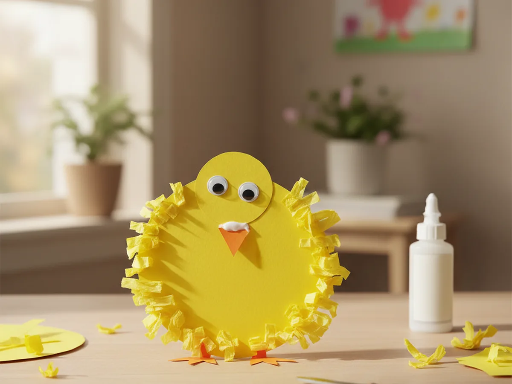
5. Paper Bee
Cut a fat oval from yellow paper and glue on black paper strips across the body to make classic bee stripes. Add two small white wing shapes cut from tissue paper or regular paper, a tiny stinger, and a pair of googly eyes. Attach a loop of thread at the top so your bee can dangle from a mobile or hang in a window. These little bees are irresistibly cute and ridiculously easy to make.
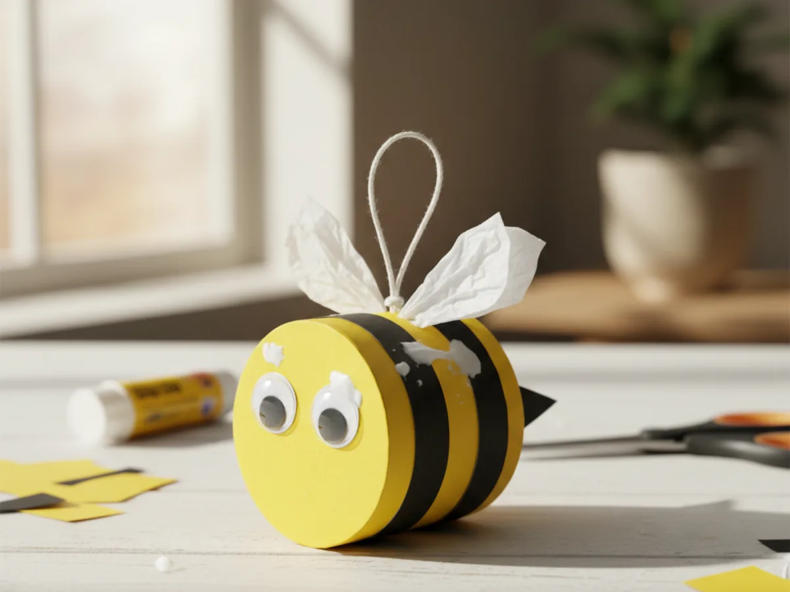
6. Paper Caterpillar
Cut a long strip of green paper and accordion-fold it into a zigzag accordion body. Glue a larger circle at one end for the head, add two googly eyes, a tiny smile drawn in marker, and two short pipe cleaner antennae. The accordion fold gives the caterpillar a fun springy movement that kids love to play with. This one is a great introduction to accordion folding for beginners.
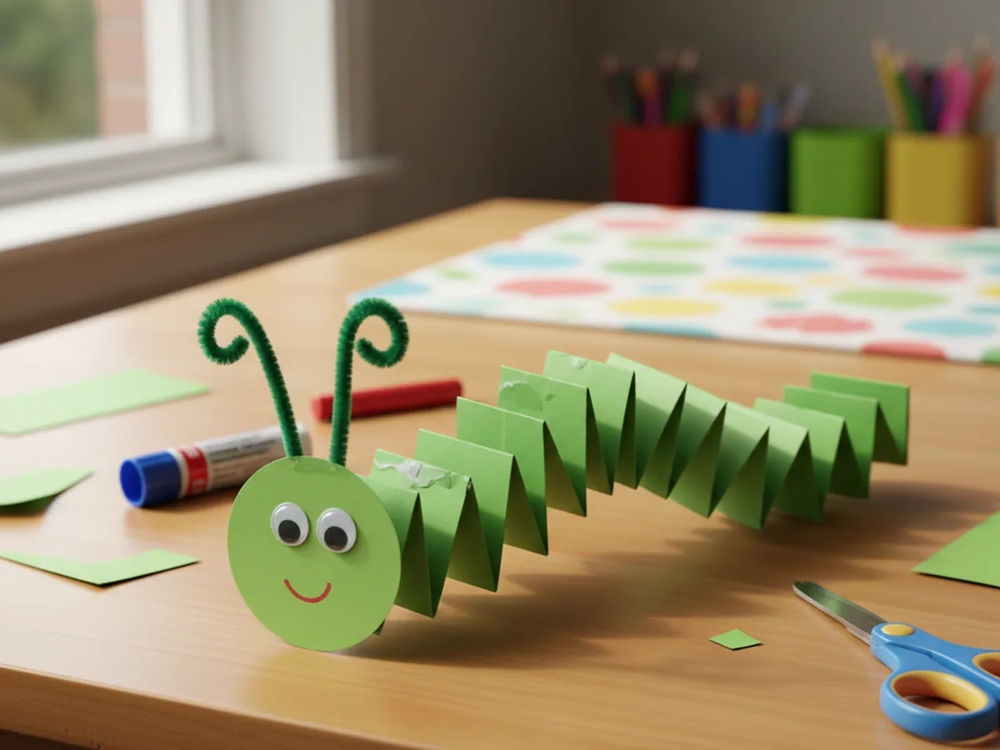
7. Paper Kite
Cut a large diamond shape from bright cardstock and decorate it with crayon stripes, polka dots, or your child's favorite colors. Attach a long crepe paper or ribbon tail at the bottom and a string at the top. These make a lovely spring decoration when hung above a child's bed, and older kids enjoy experimenting with different tail lengths to see which looks best.
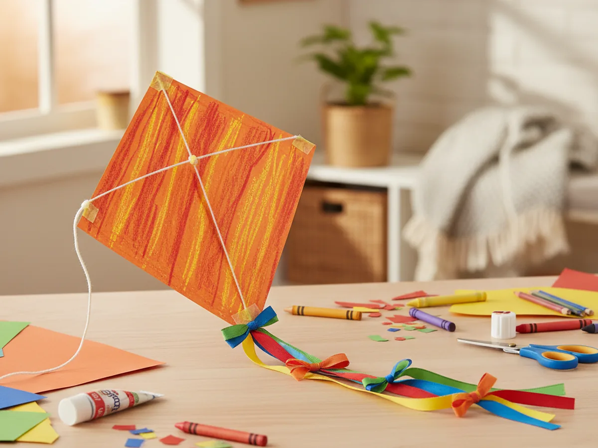
8. Paper Ladybug
Cut a large red circle and fold it in half to create the two open wings. Glue a smaller black semicircle at the top for the head and add black paper dot spots on the red wings. Stick on two googly eyes and draw a thin center line down the wings with a black marker. These cheery little spring paper crafts look wonderful displayed on a windowsill or taped along a bookshelf. 🐞
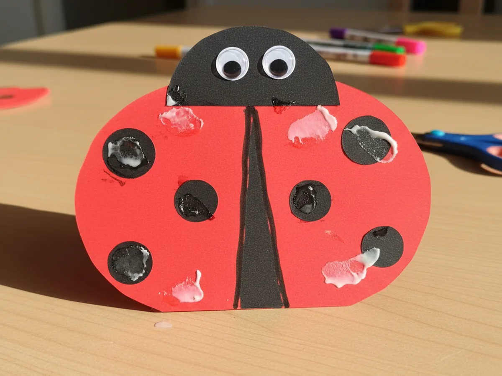
9. Paper Bird Nest
Tear brown and tan paper strips into rough shreds and layer them inside a small bowl shape cut from cardstock to create a cozy nest. Tuck in two or three small paper eggs made from oval cuts in pastel blue or speckled white. This craft has a lovely tactile quality that toddlers enjoy, and the finished nest looks sweet displayed as a seasonal centerpiece on a table.
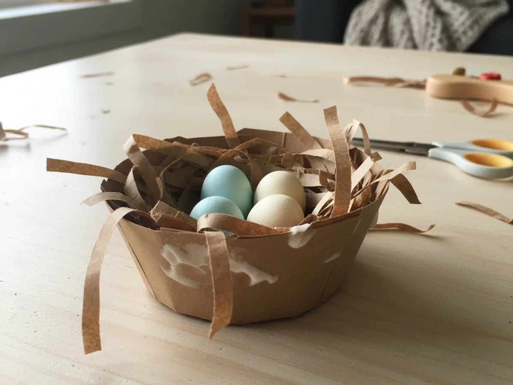
10. Paper Frog
Stack a large green circle body and a smaller green circle head, then add two large white eye circles with black pupils on top of the head. Cut two sets of rounded green legs and fold the ends up to create feet. Your child can draw a wide smile and red tongue with markers. The best part is that this paper frog craft needs nothing beyond basic green paper and a glue stick to turn out adorably.
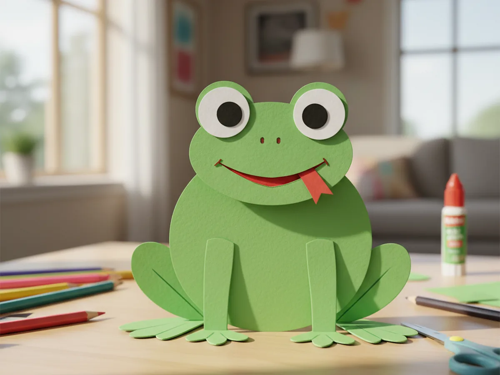
11. Paper Umbrella
Cut a large semicircle from bright patterned or plain paper and fold it into a gentle dome shape, securing the edges with glue. Tape a paper straw or thin rolled paper tube underneath as the handle and add a small curl at the bottom. Decorate with stripes, polka dots, or flower shapes for extra spring flair. These look sweet hung as a garland on a rainy April afternoon.
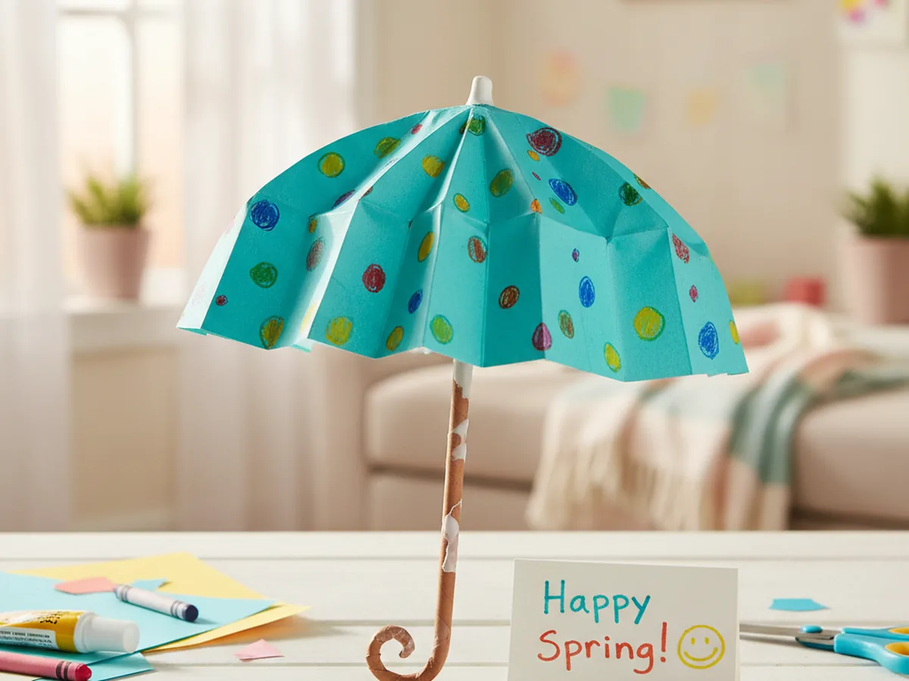
12. Paper Dragonfly
Roll a thin tube of blue or green paper for the body and flatten four wing shapes from light blue or tissue paper. Arrange two wings on each side and secure them with tape or a dab of glue. Add two small googly eyes at the front and use a marker to draw delicate vein lines on the wings. Dragonflies look incredibly realistic and elegant for how little effort they actually take to make.
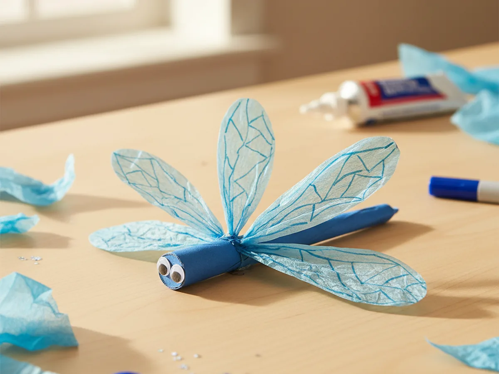
13. Paper Bunny
Cut a large circle for the body and a smaller oval for the head, both from white paper. Add two tall narrow ear shapes, a tiny pink triangle nose, whisker lines drawn in marker, and a small cotton ball tail glued to the back. Bunnies are one of the most beloved spring paper crafts for kids and can be displayed as a flat wall hanging or folded to stand upright on a surface.
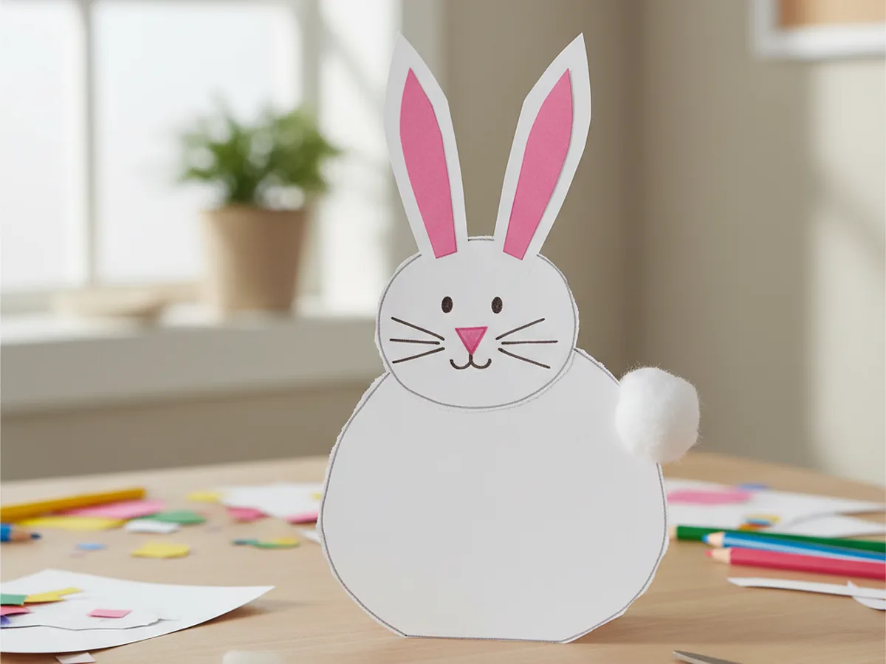
14. Paper Sunflower
Cut a large brown or dark yellow circle for the center and surround it with bright yellow petal shapes glued all around the edge. Add a long green paper stem with two leaf shapes on the sides. Your child can draw or glue on small seeds in the center circle for extra detail. A bunch of paper sunflowers in a mason jar makes one of the most cheerful springtime decorations you can imagine.
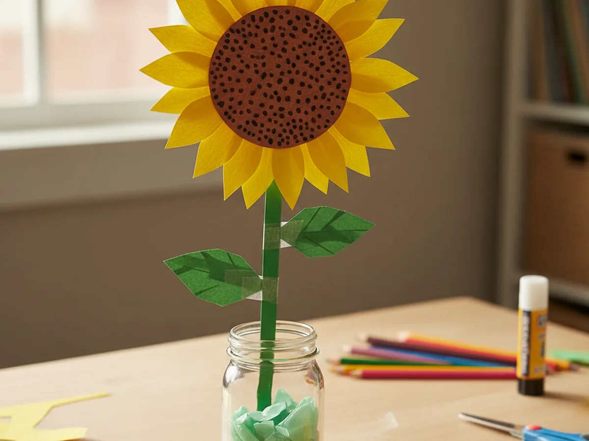
15. Paper Duck
Fold a yellow sheet in half and draw a duck outline to cut through both layers at once, getting two symmetrical duck shapes to glue together as a stand-up figure. Add an orange triangle beak, a simple eye, and optional tissue paper wing details. Standing paper ducks look charming lined up along a bathroom shelf or floating on a piece of blue construction paper "pond."
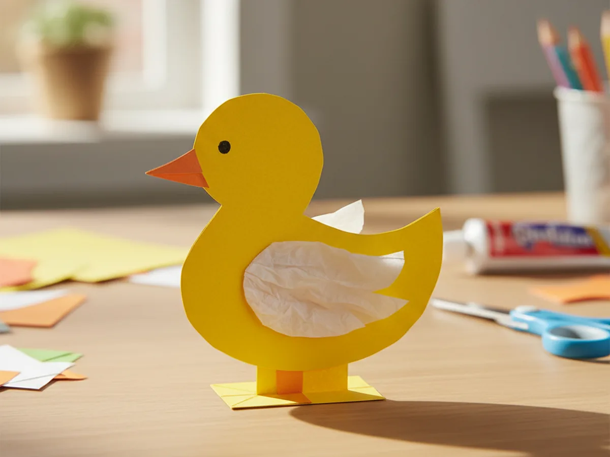
16. Paper Snail
Roll a long strip of paper tightly into a spiral shell and glue the end to hold the coil in place. Attach a small oblong body piece underneath and add two short pipe cleaner antennae with a tiny dot on each tip. Kids can decorate the shell spiral with markers before rolling it up, creating a custom swirling design inside. Snails are one of those simple spring paper crafts that always gets a delighted reaction.
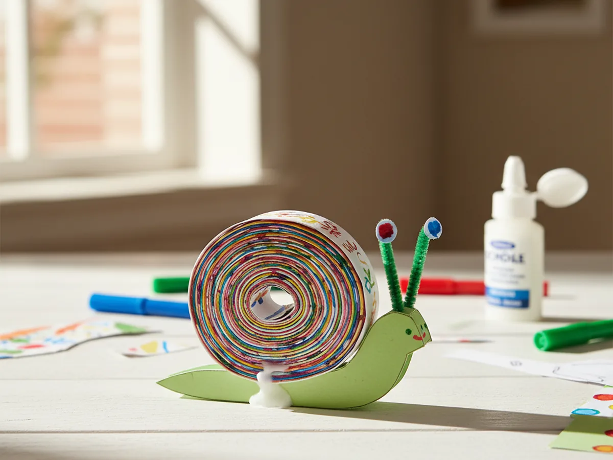
17. Paper Cloud Mobile
Cut five or six cloud shapes from white cardstock and hang them at different lengths from a wooden dowel or a twig using white string. Add small paper raindrops in light blue dangling below some of the clouds for a sweet layered effect. These mobiles are gorgeous above a baby's crib or hanging in a child's bedroom window, and they come together in under half an hour.
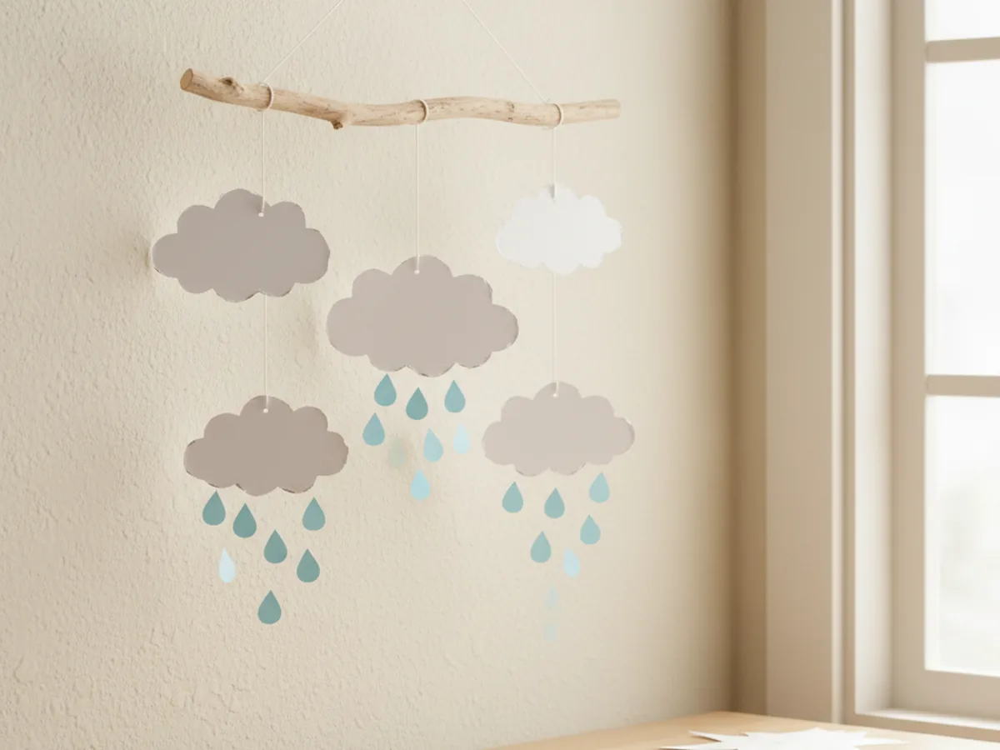
18. Paper Raindrop Garland
Cut teardrop shapes from blue and lavender paper in varying sizes and punch a small hole at the narrow top of each one. Thread them onto a long piece of twine, spacing them out as you go. The garland can be kept as a single color or mix several shades of blue for a lovely gradient effect. Draping one across a mantel or along a shelf is the simplest possible way to bring spring inside. ☁️
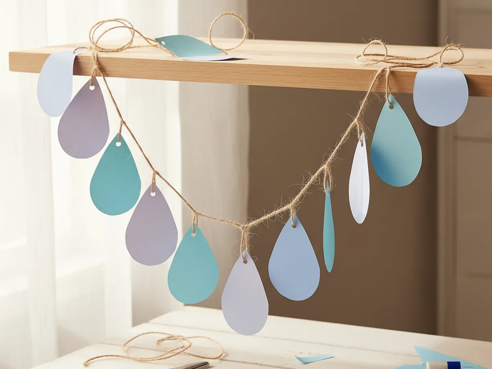
19. Paper Strawberry
Cut a large red heart shape for the strawberry body and add tiny yellow marker dots all over the surface to look like seeds. Glue several small green paper leaves at the top and attach a short green paper stem. Make a few in different sizes for a cute paper fruit display. These pair beautifully with the paper sunflower from idea 14 as part of a cheerful springtime window display.
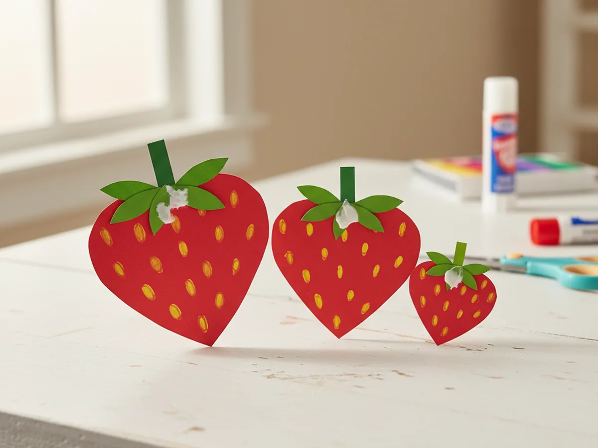
20. Paper Flower Wreath
Cut the center from a paper plate to create a round ring and cover it with overlapping paper petals in pink, yellow, and white. Add small green leaf shapes tucked between the flowers and tie a ribbon bow at the top for hanging. This wreath is one of the most showstopping spring paper crafts on this list, and it takes nothing but basic paper, a paper plate, and a little patience from you both.
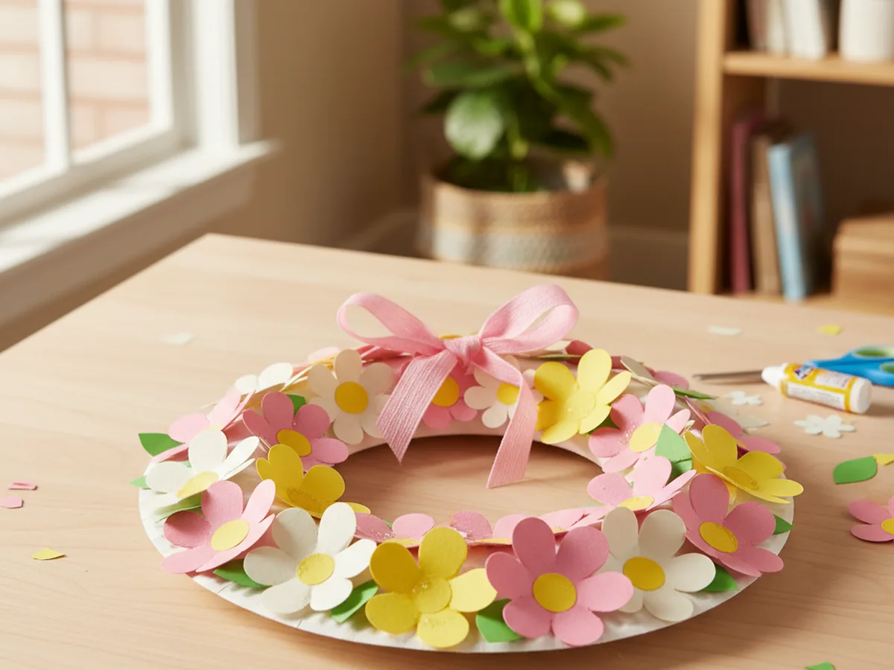
Final Thoughts
Spring is one of the most joyful seasons to craft with kids, and all you really need is a stack of colorful paper and a little time together. Whether you pick one idea or work your way through the whole list, every one of these spring paper crafts is designed to feel easy, low-stress, and genuinely fun. The results make beautiful decorations, sweet gifts, and lasting little memories. Pick your favorite and get started today. 🌿
More Crafts You'll Love
If you enjoyed these spring ideas, these two are perfect for your next craft afternoon.
Happy crafting and happy spring!